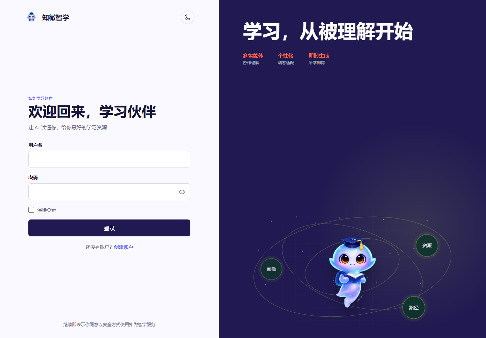

OPEN SOURCE / PROJECT FIELD NOTES
知微智学
把一个学习问题，拆成可以探索的资源与路径。
这是可离线浏览的项目导览，包含真实登录界面与实现说明。完整的注册、AI对话、学习画像和资源服务需要自行启动前后端及数据库；本导览不执行这些服务。
从源码运行 ↓
01 / EXPLORE
从问题，到实现。
学习画像
主实现提供学习画像读取与更新接口，前端以专业、学习偏好和学习进度组织工作台。真实画像来自使用者自己的账号。
02 / RUN LOCALLY
把项目带到你的环境。
以下为运行入口；数据库、服务密钥与平台账号由使用者自行配置。复制命令前先阅读仓库README的完整前置条件。
克隆源码
git clone https://github.com/yangwei251003/zhiwei-ai-learning.git运行前端
cd zhiwei-ai-learning/frontend
npm ci
npm run dev运行后端
cd zhiwei-ai-learning/backend
python -m venv .venv
# 激活虚拟环境并按README配置后：
pip install -r requirements.local.txt
alembic upgrade head
uvicorn app.main:app --reload公开体验的范围
这是可离线浏览的项目导览，包含真实登录界面与实现说明。完整的注册、AI对话、学习画像和资源服务需要自行启动前后端及数据库；本导览不执行这些服务。
本页面提供项目说明、源码入口与真实画面，不提交登录信息、不请求AI模型、不接触支付或私人数据库。应用的完整行为以源码及README所列部署方式为准。
阅读README与验证边界 ↗